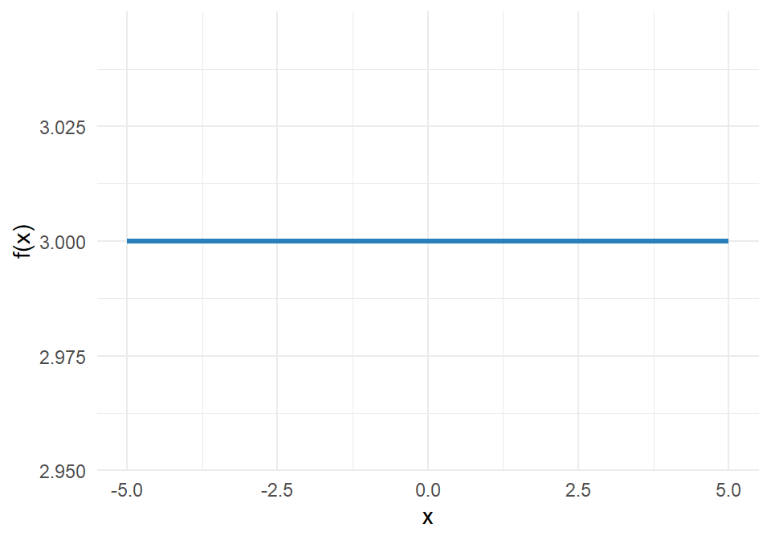
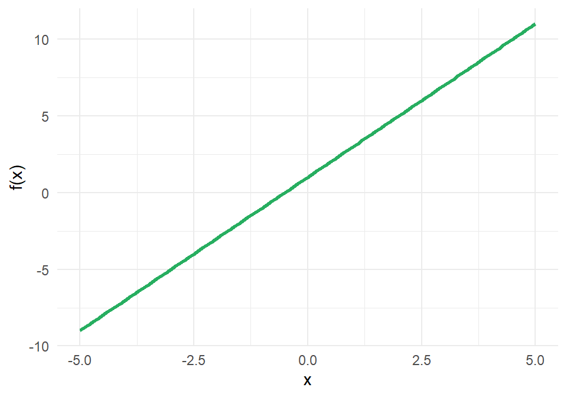
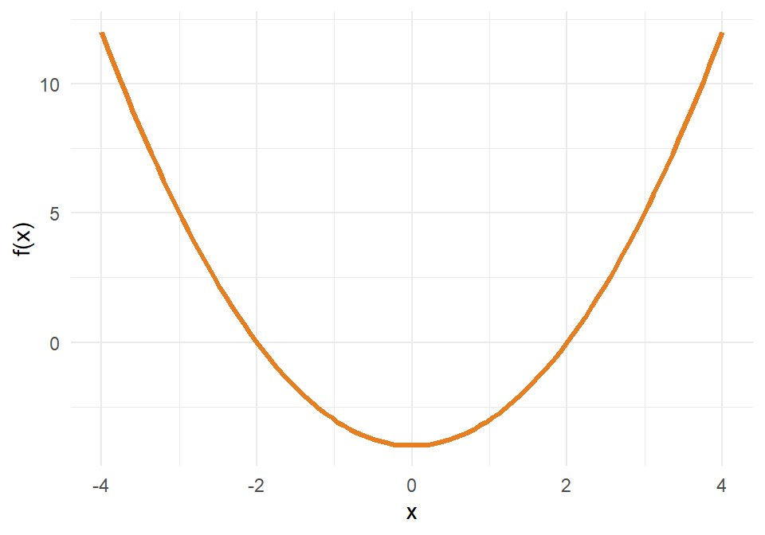
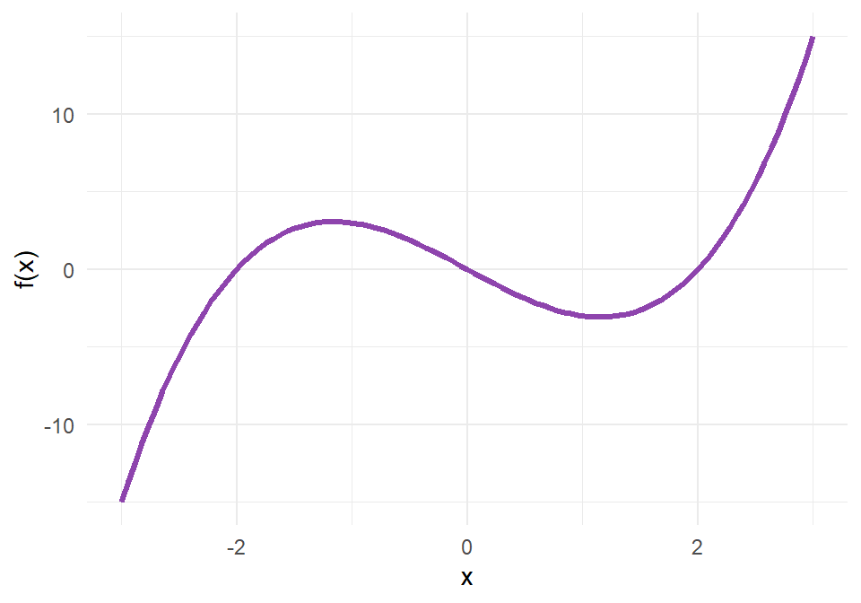
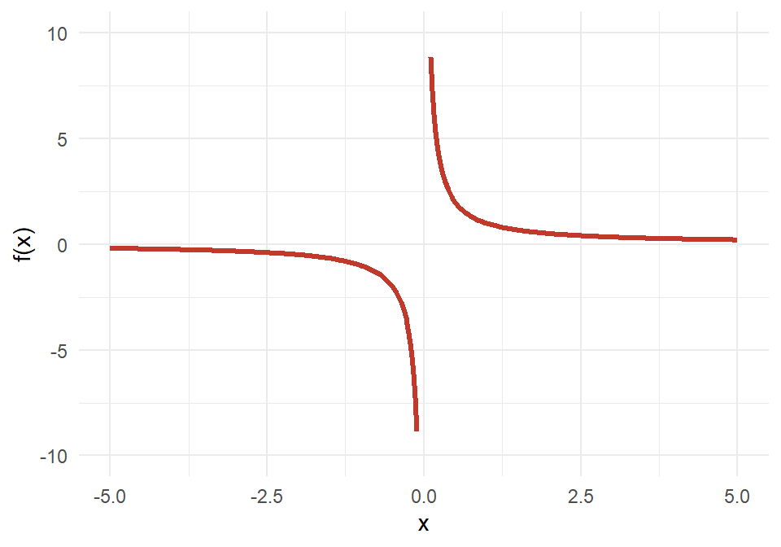
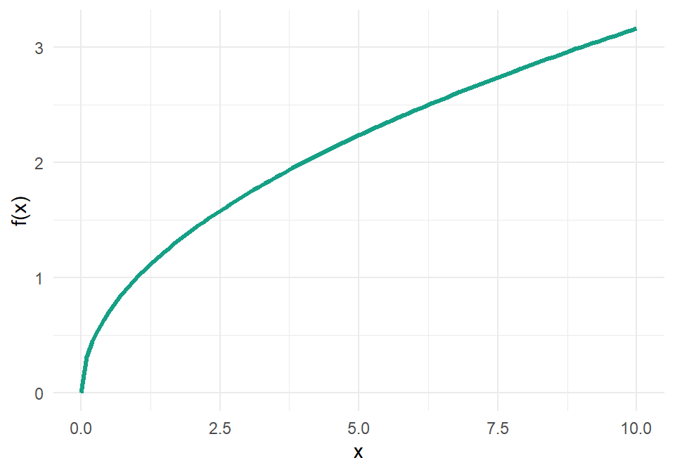
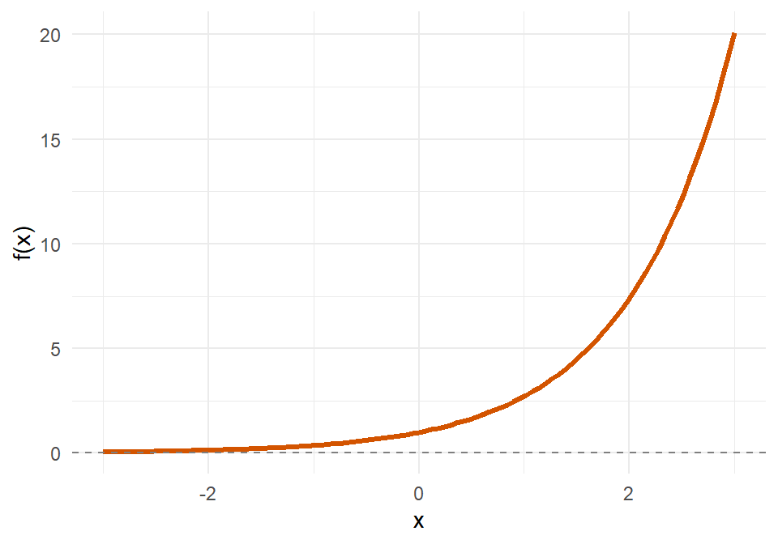
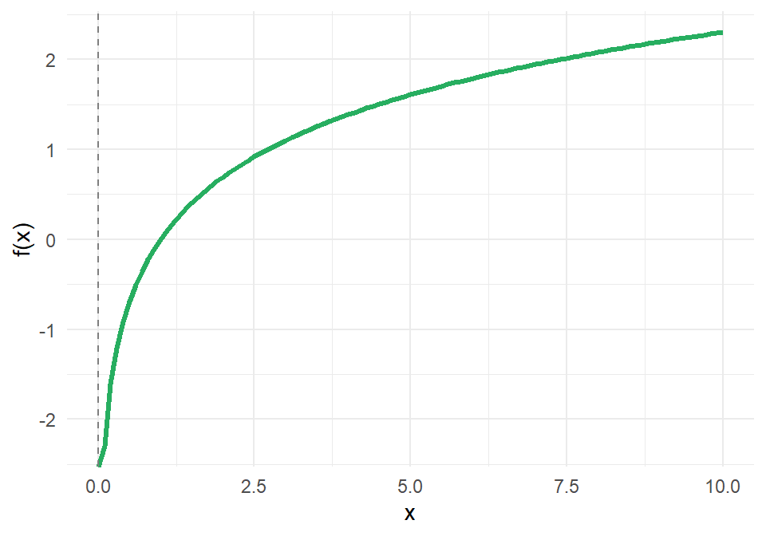
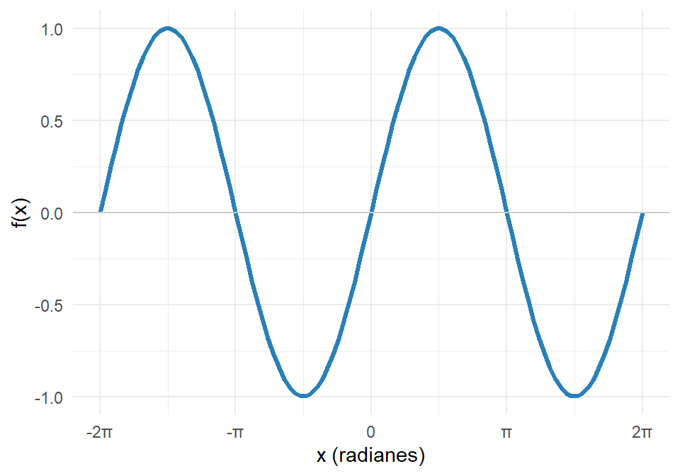

02 Tipos de funciones
13 de febrero de 2026
Una función \(f(x)\) mapea elementos de un conjunto de entrada hacia un conjunto de salida.
- Dominio: Es el conjunto de entrada (los valores que puede tomar \(x\)).
- Rango: Es el conjunto de salida (los valores resultantes de \(y\) o \(f(x)\)).
Por ejemplo, si tenemos \(f(x) = x + 4\), al evaluar \(a\), obtenemos \(f(a) = a + 4\).
Todas las funciones se pueden graficar.
Tipos de funciones
Las funciones se dividen en dos grandes familias: algebraicas y trascendentes.
Funciones algebraicas
\(f(x) = k\)
Ejemplo: \(f(x) = 3\)
\(f(x) = mx + b\)
Ejemplo: \(f(x) = 2x + 1\)

\(f(x) = ax^2 + bx + c\)
Ejemplo: \(f(x) = x^2 - 4\)

\(f(x) = a_n x^n + \dots + a_0\)
Ejemplo: \(f(x) = x^3 - 4x\)

\(f(x) = \frac{P(x)}{Q(x)}\)
Ejemplo: \(f(x) = \frac{1}{x}\)

\(f(x) = \sqrt[n]{P(x)}\)
Ejemplo: \(f(x) = \sqrt{x}\)

Funciones trascendentes
\(f(x) = a^x\)
Ejemplo: \(f(x) = e^x\)

\(f(x) = \log_a(x)\)
Ejemplo: \(f(x) = \ln(x)\)

\(f(x) = \sin(x), \cos(x), \tan(x)\)
Ejemplo: \(f(x) = \sin(x)\)

Propiedades de las funciones
Al analizar la gráfica de una función, podemos identificar las siguientes propiedades:
- Concavidad
- Acotación
- Periodicidad
- Asíntotas
Ejemplos de funciones
1. \(f(x) = x^2 - 4\)
- Dominio: \(x \in \mathbb{R}\) o \((-\infty, \infty)\)
- Rango: \(\{y \in \mathbb{R} \mid y \ge -4\}\) o \([-4, \infty)\)
| x | f(x) |
|---|---|
| -3 | 5 |
| -2 | 0 |
| -1 | -3 |
| 0 | -4 |
| 1 | -3 |
| 2 | 0 |
| 3 | 5 |
2. \(f(x) = \frac{1}{x+3}\)
- Dominio: \(\{x \in \mathbb{R} \mid x \neq -3\}\) o \((-\infty, -3) \cup (-3, \infty)\)
- Rango: \(\{y \in \mathbb{R} \mid y \neq 0\}\)
| x | f(x) |
|---|---|
| -6 | -0.33 |
| -5 | -0.5 |
| -4 | -1 |
| -3 | Indefinido |
| -2 | 1 |
| -1 | 0.5 |
| 0 | 0.33 |
3. \(f(x) = \sqrt{9-x^2}\)
- Dominio: \(9-x^2 \ge 0 \implies (3-x)(3+x) \ge 0 \implies -3 \le x \le 3\). Dominio: \([-3, 3]\)
- Rango: \([0, 3]\)
| x | f(x) |
|---|---|
| -4 | No Real |
| -3 | 0 |
| -2 | 2.24 |
| -1 | 2.83 |
| 0 | 3 |
| 1 | 2.83 |
| 2 | 2.24 |
| 3 | 0 |
| 4 | No Real |
4. \(f(x) = |x-2|\)
- Dominio: \(x \in \mathbb{R}\)
- Rango: \(\{y \in \mathbb{R} \mid y \ge 0\}\) o \([0, \infty)\)
| x | f(x) |
|---|---|
| -1 | 3 |
| 0 | 2 |
| 1 | 1 |
| 2 | 0 |
| 3 | 1 |
| 4 | 2 |
| 5 | 3 |
5. \(f(x) = \sqrt{5-x}\)
- Dominio: \(5-x \ge 0 \implies x \le 5\). Dominio: \((-\infty, 5]\)
- Rango: \([0, \infty)\)
| x | f(x) |
|---|---|
| 1 | 2 |
| 2 | 1.73 |
| 3 | 1.41 |
| 4 | 1 |
| 5 | 0 |
| 6 | No Real |
| 7 | No Real |
6. \(f(x) = \frac{x}{|x|}\)
- Dominio: \(x \in \mathbb{R} \mid x \neq 0\)
- Rango: \(\{-1, 1\}\) (Es 1 si \(x > 0\), y -1 si \(x < 0\))
| x | f(x) |
|---|---|
| -3 | -1 |
| -2 | -1 |
| -1 | -1 |
| 0 | Indefinido |
| 1 | 1 |
| 2 | 1 |
| 3 | 1 |
7. \(f(x) = \frac{2x}{x^2 - 9}\)
- Dominio: El denominador se hace cero cuando \(x^2 - 9 = 0\), es decir, en \(x = 3\) y \(x = -3\).
- \(D_f = \mathbb{R} \setminus \{-3, 3\}\) o \((-\infty, -3) \cup (-3, 3) \cup (3, \infty)\)
- Rango: La función cruza el eje horizontal y cubre todos los valores reales.
- \(R_f = \mathbb{R}\)
| x | f(x) |
|---|---|
| -5 | -0.62 |
| -4 | -1.14 |
| -3 | Indefinido |
| -2 | 0.8 |
| -1 | 0.25 |
| 0 | 0 |
| 1 | -0.25 |
| 2 | -0.8 |
| 3 | Indefinido |
| 4 | 1.14 |
| 5 | 0.62 |
8. \(f(x) = \sqrt{x^2 - 4}\)
- Dominio: \(x^2 - 4 \ge 0 \implies (x-2)(x+2) \ge 0\). Esto ocurre en los extremos exteriores de las raíces.
- \(D_f = (-\infty, -2] \cup [2, \infty)\)
- Rango: Como es una raíz principal par, sus valores son no negativos.
- \(R_f = [0, \infty)\)
| x | f(x) |
|---|---|
| -4 | 3.46 |
| -3 | 2.24 |
| -2 | 0 |
| -1 | No Real |
| 0 | No Real |
| 1 | No Real |
| 2 | 0 |
| 3 | 2.24 |
| 4 | 3.46 |
9. \(f(x) = \frac{1}{\sqrt{x}}\)
- Dominio: El argumento de la raíz debe ser positivo y, al estar en el denominador, no puede ser cero.
- \(D_f = (0, \infty)\)
- Rango: El numerador es una constante positiva y la raíz siempre da valores positivos, por lo que nunca toca el cero ni los negativos.
- \(R_f = (0, \infty)\)
| x | f(x) |
|---|---|
| 0 | Asíntota |
| 1 | 1 |
| 2 | 0.71 |
| 3 | 0.58 |
| 4 | 0.5 |
| 5 | 0.45 |
10. \(f(x) = \frac{1}{x+3}\)
- Dominio: El denominador no puede ser cero.
- \(D_f = \mathbb{R} \setminus \{-3\}\) o \((-\infty, -3) \cup (-3, \infty)\)
- Rango: Como el numerador nunca es cero, \(f(x)\) nunca vale cero.
- \(R_f = \mathbb{R} \setminus \{0\}\)
| x | f(x) |
|---|---|
| -6 | -0.33 |
| -5 | -0.5 |
| -4 | -1 |
| -3 | Indefinido |
| -2 | 1 |
| -1 | 0.5 |
| 0 | 0.33 |